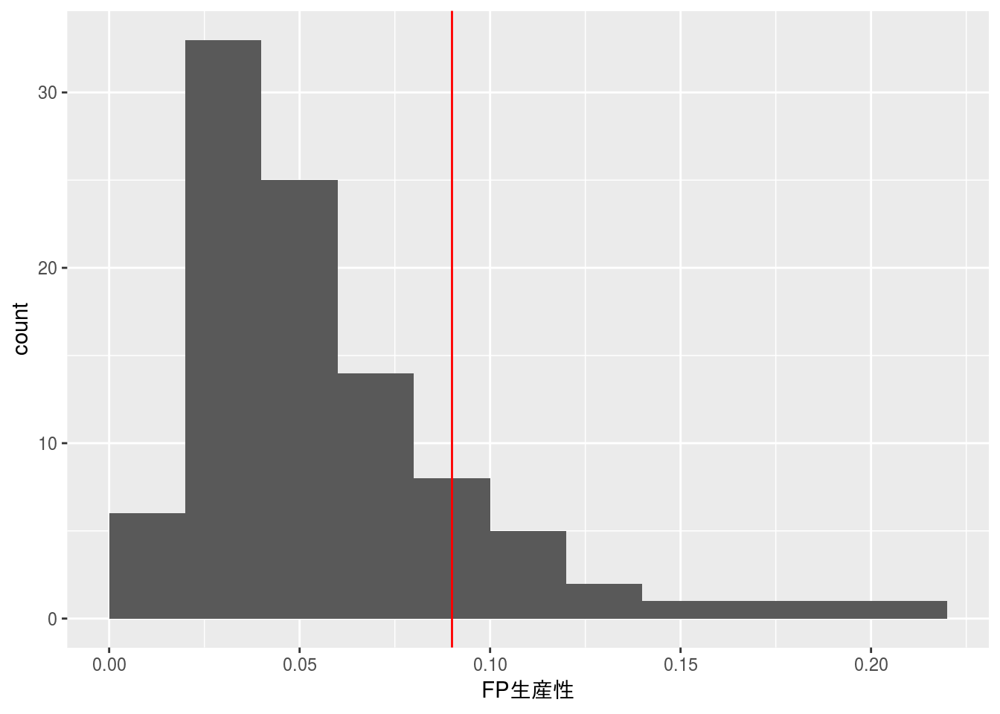
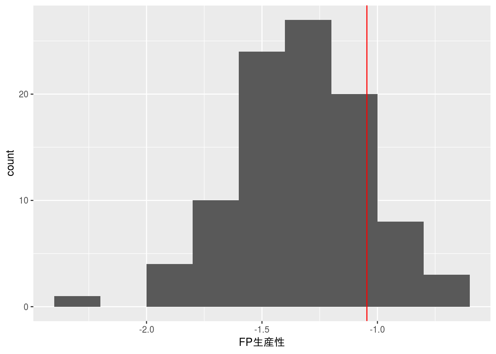
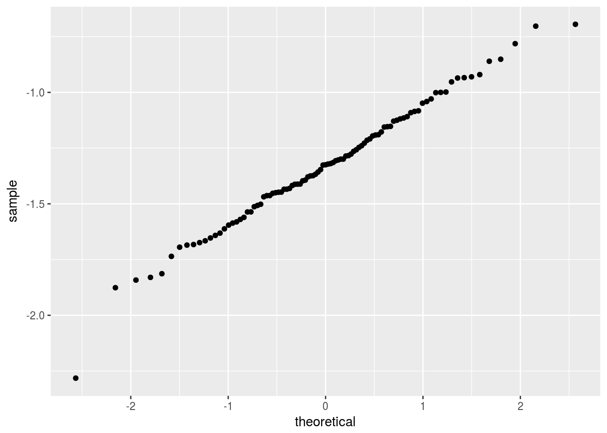

第5章 例題解答例
はじめに
本資料は「ソフトウェアメトリクス統計分析入門(小池利和著)」(以降、テキストと記載)の第5章の例題をRで解いた際の解答例を示したものです。また、R Markdownを使うメリットを示すための一手段として作成していますので、テキストにおける計算方法とは異なる部分もあります。本資料で使用しているデータの入手に関してはテキストにてご確認下さい。
本資料がHTML形式の場合、Rのコードを参照するには右側にある[Code]ボタンをクリックして下さい。なお、JavaScriptは必ずOnにしてご覧下さい。
例題5.1
第1章の例題1.1と同じ状況を想定します。 図5.1に示す『ソフトウェア開発データ白書2014-2015』をベンチマークとして、あるプロジェクトのFP生産性0.09 FP/人時の金融業界における位置づけを調べてください。 例題1.1との違いは、データ白書の2014-2015版データを使う点です。そちらの版は5数要約値だけではなく、2012-2013版にはなかった生データも公開されています。 以下に「K：金融・保険業」のFP生産性の生データを掲載してあります． 出典：SECデータ白書2014-2015版のダウンロードデータ graph_data_9.xlsxの9-1-9, 10シートのデータで 業種（大分類）を「K：金融・保険業」でフィルタリングしたもの
生産性の測定を開始し、あるプロジェクトの生産性が0.09FP/人時となりました。まだデータをとり始めたばかりなので、この0.09という値の良否が判断できません。 そこで、『ソフトウェア開発データ白書』をベンチマークとして、業界内において、どの程度の位置づけとなるのかを調べることにしました。
『ソフトウェア開発データ白書2012-2013』のp.288に業種別FP生産性データが掲載されています。それを図1.1に示します。この組織の業種は、「K. 金融・保険業」に該当します。さて、このプロジェクトの生産性をどのように評価すればよいでしょうか。
出典：ソフトウェアメトリクス統計分析入門 P12
データの設定
本例題で利用するデータは予めCSVファイルとして保存されているものとします。
file <- "./data/ex_5.csv"
x <- read.csv(file, header = TRUE, sep = ",", fileEncoding = "UTF-8")
df_print(x)FP生産性の特徴
業種別FP生産性データの特徴を把握するためにヒストグラムを描き、その上にあるプロジェクトでのFP生産性0.09をプロットしてみます。
# fivenum(x[, 1], na.rm = TRUE)
summary(x)## FP生産性
## Min. :0.005223
## 1st Qu.:0.031488
## Median :0.047350
## Mean :0.056776
## 3rd Qu.:0.070381
## Max. :0.202100x %>%
ggplot(aes(x[, 1])) +
# geom_histogram(binwidth = diff(hist(x[, 1], plot = FALSE)$breaks)[1]) +
geom_histogram(breaks = pretty(x[, 1], n = nclass.Sturges(x[, 1]))) +
geom_vline(xintercept = 0.09, colour = "red") +
xlab("FP生産性")
あるプロジェクトのFP生産性（0.09）は、ヒストグラムを見てもわかるように業種別FP生産性の平均値ならびに中央値よりも上側にあることが分かりますが、ヒストグラムが右に歪んだ形であるため、どの程度の位置にあるかの判断が難しいです。
そこで、業種別FP生産性のデータを対数変換してみます。
log.x <- log10(x)
log.x %>%
ggplot(aes(log.x[, 1])) +
# geom_histogram(binwidth = diff(hist(log.x[, 1], plot = FALSE)$breaks)[1]) +
geom_histogram(breaks = pretty(log.x[, 1], n = nclass.Sturges(log.x[, 1]))) +
geom_vline(xintercept = log10(0.09), colour = "red") +
xlab("FP生産性")
log.x %>%
ggplot(aes(sample = log.x[, 1])) +
geom_qq()
shapiro.test(log.x[, 1])##
## Shapiro-Wilk normality test
##
## data: log.x[, 1]
## W = 0.98976, p-value = 0.6657対数変換後のFP生産性データは概ね正規分布にしたがっていることから、あるプロジェクトのFP生産性（0.09）の上位確率を正規分布の確率関数から求めてみます。
pnorm(log10(0.09), mean = mean(log.x[, 1]), sd = sd(log.x[, 1]), lower.tail = FALSE)## [1] 0.1519098これよりあるプロジェクトのFP生産性（0.09）は業種別FP生産性データと比較すると上位15%程度に位置するデータであると判断できます。
 CC BY-NC-SA 4.0, Sampo Suzuki [2017-04-22 14:22(JST)]
CC BY-NC-SA 4.0, Sampo Suzuki [2017-04-22 14:22(JST)]